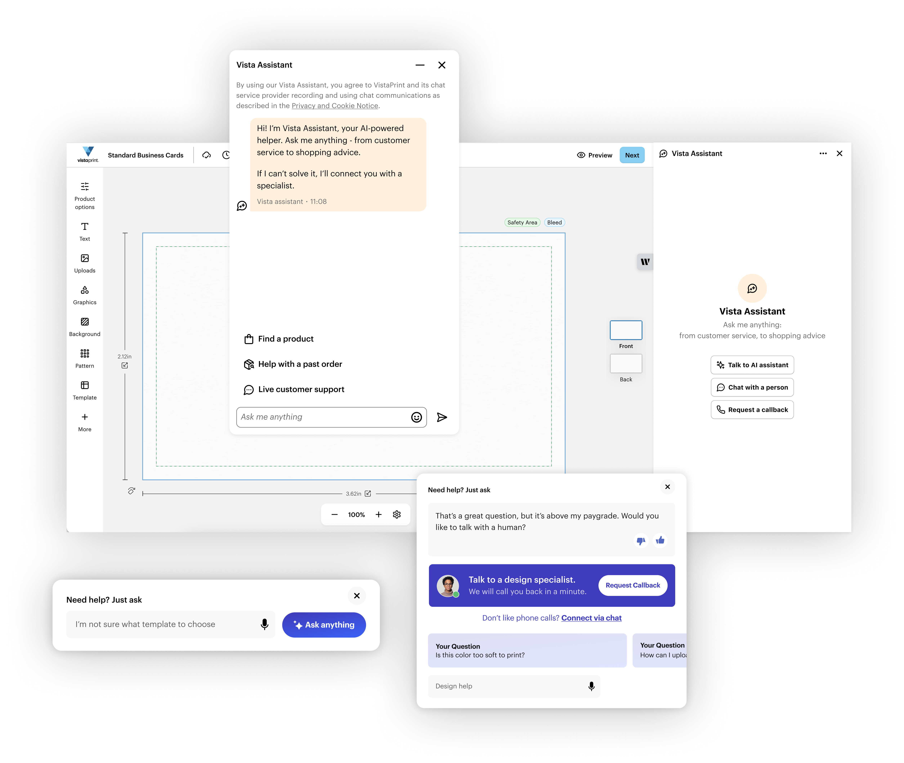
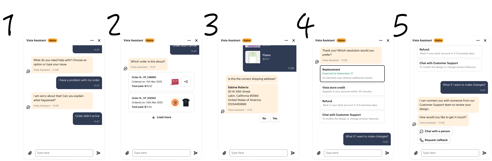
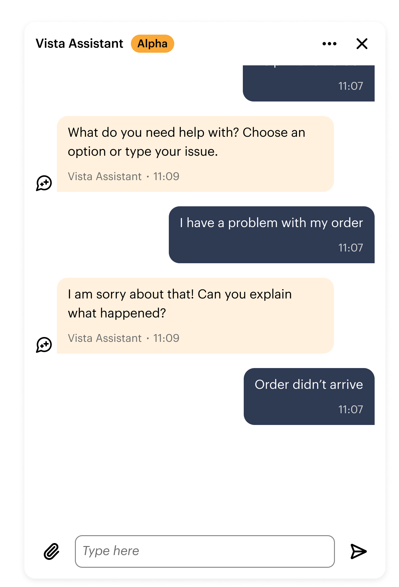
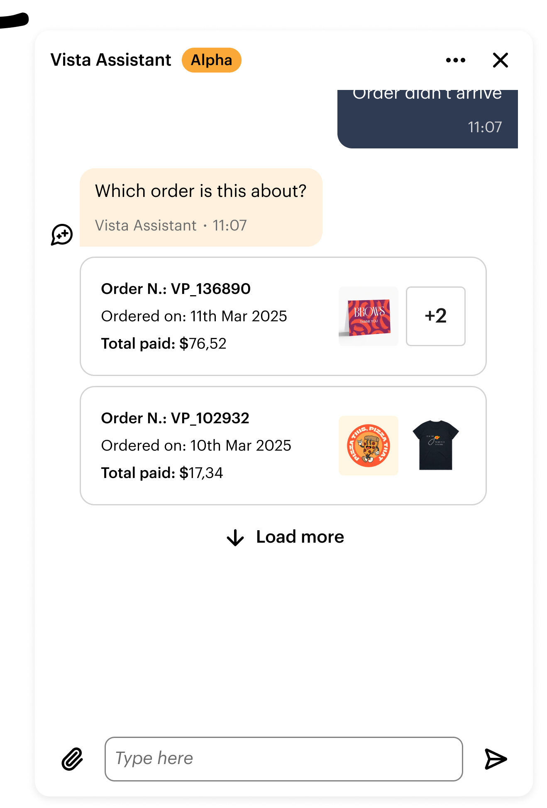
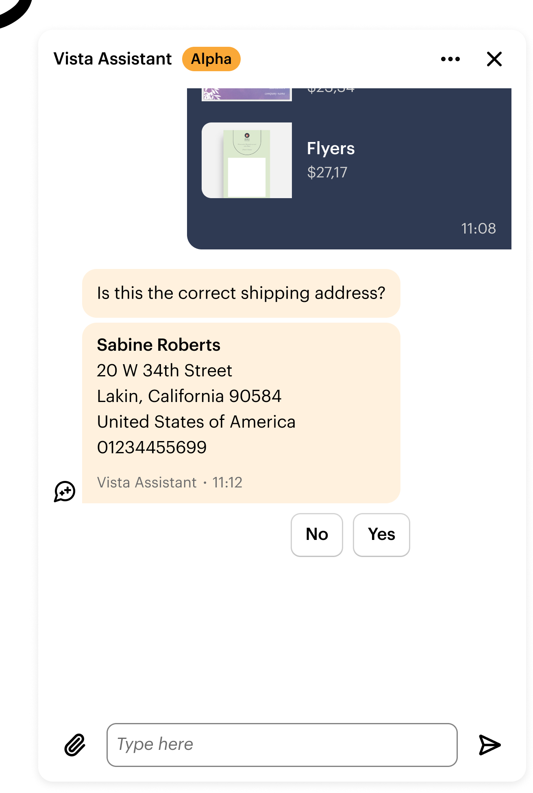
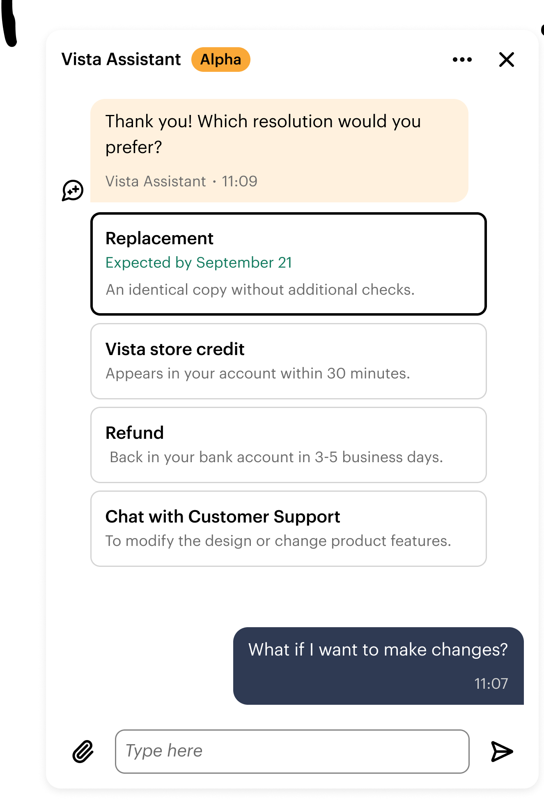
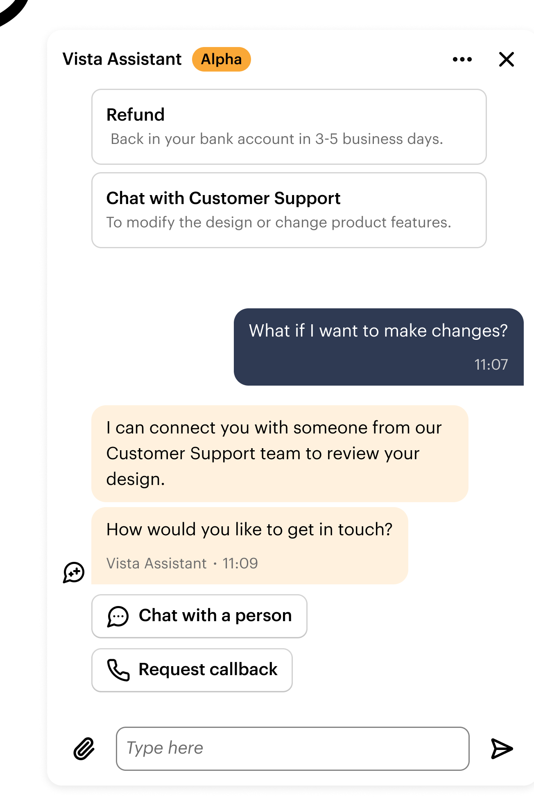

Customers interpret categories, search help content and choose between different support channels.
02 — PRODUCT VISION + INTERACTION DESIGN
From vision to product: designing the interaction in between
Turning an ambitious product direction into interaction models, interface patterns and conversational behaviour — then using what we learned in production to shape what came next.

My role + Scope + collaborator
My ownership Led product vision and interaction prototyping for future Vista Assistant models, turning ambiguous strategy into testable flows, interface patterns and conversational behaviour.
Focus · Product vision · UX/UI · conversational design · prototyping
Partnered with · Product · Engineering · Research · Content
The opportunity
Customer support was moving from navigation and search toward conversation.
AI created an opportunity to rethink how customers found help: instead of navigating support content and disconnected channels, they could describe what they needed and be guided toward an answer, action or specialist.
The design challenge
What would customer support look like if conversation became the primary interface?
The vision had to move from idea to product.
01 — Define the vision
We started by
changing the role of the interface.
Instead of asking customers to understand the support system, the experience would interpret their intent, guide the next step and bring in a specialist when that was the better path.
→
A conversational layer interprets the need and helps customers reach the right resolution path.
Vision principles
01
02
03
Start with the customer's need.
Customers should not need to understand the support organisation before they can ask for help.
Guide toward resolution.
Conversation should help customers make progress, not simply surface information.
Human support remains part of the system.
AI should recognise when another form of support is the better path.
02 — From vision to requirements
The vision immediately exposed what the product needed to do.
A conversational support experience was not just a new interface. It required clear behaviour across intent, guidance, system actions, failure states and specialist handover.
Recognise what the customer needs.
The system needed enough confidence to choose the right flow — and a way to recover when intent remained ambiguous.
Move from answers into structured help.
Some problems required guided steps rather than a single conversational response.
Connect conversation to service capabilities.
The assistant needed to retrieve information, trigger actions and communicate what happened.
Design for when the system couldn't continue.
Fallbacks, uncertainty and human handover had to be part of the product behaviour from the start.






03 — Crafting the experience
Conversation changed how the interface needed to work.
This part of the work moved between interaction design, UI craft and conversational design. The challenge was not simply to design a chat surface, but to define when the experience should speak, guide, structure or act.

Guided support
Not everything should be a conversation.
For predictable support tasks, guided steps reduced cognitive load and made progress clearer. Conversation still mattered — but often as the layer that framed, explained and adapted the flow.
Conversation design principles
01
02
03
One clear next step.
Responses should make progress obvious rather than presenting customers with conversational noise.
Conversation when it helps. Structure when it helps.
Natural language and guided UI should complement each other rather than compete for attention.
Make system state explicit.
Customers should understand what the assistant is doing, what happened and what happens next.
Accessibility
Conversational interfaces introduced their own accessibility workstream.
Dynamic content, focus management, announcements, action hierarchy and structured alternatives all had to be designed intentionally rather than retrofitted later.
Accessibility workstream
In progress
A11Y-12
Done
Announce new assistant messages
Ensure dynamic conversational updates are exposed to screen readers.
A11Y-18
In progress
Manage focus during guided flows
Preserve orientation when new content, actions or panels appear.
A11Y-21
In progress
Clarify button and action hierarchy
Make conversational actions discoverable, ordered and keyboard-friendly.
A11Y-27
Next
Provide structured alternatives
Avoid making freeform conversation the only accessible route through the experience.
Focus management
Where does focus go after a new message, step or panel appears?
Announcements
Which system updates should be read out automatically?
Action hierarchy
Are primary next steps clear visually and semantically?
Alternatives
Can structured UI reduce reliance on long conversational exchanges?
04 — From vision to customers
Once live, the biggest learning wasn't usability.
It was expectation.
Customers arrived with assumptions shaped by previous chatbot experiences — influencing trust, engagement and expectations before the conversation even started.